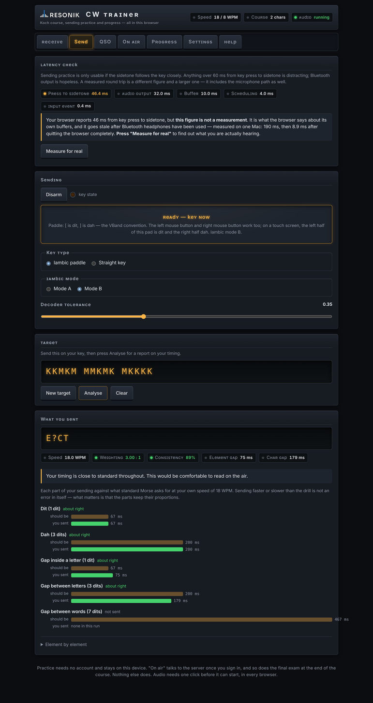

Contents
- 1Welcome
- 2Getting started in five minutes
- 3The Receive tab — learning to copy
- 4Finishing the course — the final exam and the certificate
- 5The Send tab — keying practice
- 6The QSO tab — a contact with a simulated operator
- 7The On air tab — working other members
- 8The Progress tab
- 9The Settings tab
- 10Operating reference
- 11When something is not working
- 12Glossary
Chapter 5The Send tab — keying practice
The Send tab gives you a short target to send, listens to your key, decodes what you actually sent, and reports on your timing element by element. Nothing is transmitted; it is you, your key and an honest listener.


5.1Keys and paddles
What you own changes how you practise and how this application should be set. With no key at all, the bracket keys on your keyboard work: [ for dit, ] for dah — the convention of the VBand online keyer, so an adaptor already set up for VBand works here untouched. The left and right mouse buttons work too.
Straight key
One lever, pressed down and released. You time every dit, every dah and every gap yourself. Nothing is generated for you, which is why a straight key shows a beginner’s unevenness plainly — and why it is the honest place to learn what good timing feels like.
Fully supported. Choose "Straight key" on the Send tab. The decoder judges your own timing.
Iambic (dual-lever) paddle
Two levers side by side: one makes dits, the other dahs, and an electronic keyer generates them at a set speed for as long as you hold. Squeezing both at once produces alternating dits and dahs — the "iambic" part, named for the alternating rhythm. This is what most operators use today.
Fully supported, modes A and B. The keyer is built in, so the speed comes from the app, not from hardware.
Single-lever paddle
One lever that rocks left and right rather than two separate ones. Dits one way, dahs the other. Because you cannot press both at once, squeeze (iambic) sending is impossible — every element is deliberate. Some very fast operators prefer it for exactly that reason.
Use the "Iambic paddle" setting. Everything works; the squeeze behaviour simply never comes up, so mode A and mode B make no difference to you.
Bug (semi-automatic key)
A mechanical key with a weighted pendulum that makes a string of dits automatically while you form every dah by hand. Invented to save operators’ wrists in the telegraph era. It gives a distinctive, slightly uneven "swing" that experienced operators can recognise.
Use "Straight key" mode and key it directly — the app will not generate anything for you, which is what a bug needs. The decoder tolerance may need loosening for a bug’s characteristic swing.
Sideswiper (cootie)
A single springy lever worked side to side, where both directions simply close the contact. All timing is manual, like a straight key, but the sideways motion is easier on the wrist.
Use "Straight key" mode.
Iambic mode A and mode B
This only matters with a dual-lever paddle, and only in one situation: you squeeze both levers and then release them. In mode A the keyer finishes the element it is sending and stops. In mode B it finishes that element and then sends one more, of the opposite kind. Neither is more correct. Pick one and stay with it — the muscle memory is specific to the mode, and switching later means sending stray characters for a week. Mode B is the more common default.
Getting a USB paddle adaptor working
Most inexpensive adaptors do not present themselves to the computer as a key or a keyboard. They appear as a mouse, and every dit becomes a real mouse click. This application accepts mouse buttons directly for exactly that reason, so many adaptors work with nothing to configure. The other common arrangement sends the bracket keys, which is the default here too. If neither works, Settings → Key mapping → Set dit captures whatever you press next, keyboard key or mouse button (see 8.2).
5.2Sending a target
- Choose your Key type (straight key or iambic paddle) and, for a paddle, the Iambic mode.
- Press Arm the key. The keying area lights amber and reads “Ready — key now”; click it once so it has keyboard focus. Until the key is armed, nothing you press makes a sound — this keeps the bracket keys from sounding while you type elsewhere.
- Send the Target shown above the pad. New target gives you another; targets are drawn from the characters you have unlocked, so they never ask for a character you have not learnt.
- What the decoder reads appears under What you sent as you go, so you can see what a listener would have copied.
- Press Analyse for the report. Clear wipes the run and lets you start again; Disarm puts the key to sleep.
The Decoder tolerance slider sets how forgiving the decoder is when it decides whether a gap was inside a letter or between letters. Loose while you are starting out; tighten it as you improve so it starts holding you to real timing.
5.3Reading your sending report
After keying, press Analyse. A row of figures comes back, then a report on your timing. They mean different things.
The timing report
Below the figures, five rows — dit, dah, gap inside a letter, gap between letters, gap between words. Each is drawn twice: what standard Morse asks for, and what you actually sent, both with the length in milliseconds beside them. A row you did not send anything for says so rather than scoring you zero.
The comparison is against your own speed, not the drill speed. Sending faster or slower than you were asked is not an error in itself — what makes sending readable is that the parts keep their proportions: a dah is three dits, the gap inside a letter is one, between letters three, between words seven. If you sent the whole thing at 25 WPM when the drill said 18, every row can still be green. The speed figure is where that shows up.
Above the rows is one sentence naming the most useful thing to fix. If it says your letters are running into each other, nothing else on the page matters until that is sorted: it is the fault that makes sending unreadable even when every dit and dah is perfect.
Element by element
Under the report is a fold-out with one row per element of the target, grouped by letter. The pale bar is the ideal length, the solid bar is what you sent — green within 15%, amber within 35%, red beyond. Look for a pattern rather than individual misses: consistently short dahs is worth fixing, one stray dit is not. It pairs your elements with the target in order, so one extra or missing element shifts everything after it; when the counts differ it says so. Trust the five rows above it over this.
If “Match” reads 0%, the decoder did not read back the target text. Either you sent something else — which is fine; the timing figures are still valid — or the tolerance is too tight for your fist. Loosen the tolerance slider before concluding you cannot send.
5.4The latency check
The Latency check panel on the Send tab shows how long your computer takes between the key closing and the tone starting. Under about 60 ms you stop noticing it; much above that you are practising against a delay that will not be there on the air.
The first figures shown are the browser’s own estimate, and it says so: “this figure is not a measurement”. Press Measure for real to have the application play a tone through your speakers and time it with your microphone — this tells you whether a delay is really there or the browser is reporting a stale number. The two need very different responses (see 10.3).
Bluetooth headphones and speakers add 100–200 ms between your key and the tone, which no software can remove. They are fine for receiving practice, not for sending. The panel turns red and says so.